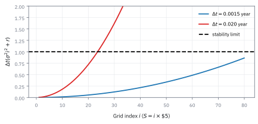
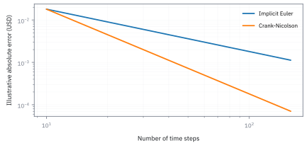
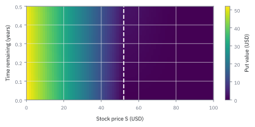
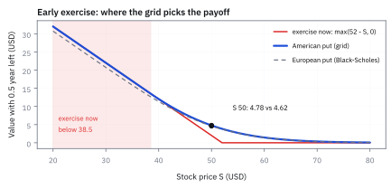

21.1 Finite-Difference Pricing
แทนความชันและความโค้งใน PDE ด้วยผลต่างของราคาบนตาราง แล้วเดินถอยหลังจากวันหมดอายุทีละขั้นเวลา ทุกช่องเลือกค่าที่มากกว่าระหว่างใช้สิทธิ์เลยกับถือต่อ ราคา American put จึงออกมาได้โดยไม่ต้องมีสูตรปิด
ลูกค้าขอซื้อ American put 100 สัญญา (10,000 หุ้น) บนหุ้นราคา \$50 strike \$52 อายุ 6 เดือน (0.5 ปี) ดอกเบี้ย 5% ต่อปี ความผันผวน 30% ต่อปี ไม่มีปันผล เด็กฝึกงานเปิดสูตร Black–Scholes ของ put ได้ \$4.6213 ต่อหุ้นแล้วเสนอราคานั้น อีกคนแย้งว่า put ตัวนี้ได้เงินอยู่แล้ว \$2 ถ้าเป็นลูกค้าก็ใช้สิทธิ์ทันที ราคา \$4.6213 ใช้ได้ไหม และลูกค้าควรใช้สิทธิ์วันนี้หรือเปล่า?
ลองตอบก่อนเปิดเฉลย
ผิดทั้งสองข้อ สูตร Black–Scholes ตั้งราคา put ที่ใช้สิทธิ์ได้เฉพาะวันหมดอายุ สิทธิ์ใช้ก่อนมีค่าอีก \$0.1617 ต่อหุ้น ราคาที่ถูกคือราว \$4.7830 ขายที่ \$4.6213 จึงเท่ากับแจกลูกค้า \$1,617 บน 10,000 หุ้น ส่วนลูกค้าที่ใช้สิทธิ์วันนี้ได้ \$2 แต่ทิ้งของที่มีค่า \$4.7830 เสียเปล่า \$2.7830 ต่อหุ้น เมื่อเหลืออายุครึ่งปี การใช้สิทธิ์ทันทีคุ้มก็ต่อเมื่อหุ้นลงไปต่ำกว่าราว \$38.5 หน้านี้หาตัวเลขทั้งหมดนี้บนตาราง
สิ่งที่เราจะสร้าง
14.1 ขั้นที่ 7 แก้ Black–Scholes PDE ของ call บนกริดไปแล้วแบบหนึ่ง และ 18.3 ตั้งราคา put อเมริกันบนต้นไม้ หน้านี้ขยายวิธีของ 14.1 ให้ใช้กับสัญญาที่ต้องตัดสินใจทุกวัน คำถาม “ควรใช้สิทธิ์ไหม” ตอบได้ที่ราคาหนึ่งและเวลาหนึ่ง ถ้ารู้มูลค่าของอีกก้าวถัดไป เราจึงเริ่มที่วันหมดอายุซึ่งรู้คำตอบแน่นอน แล้วเดินถอยหลังทีละขั้นเวลาจนถึงวันนี้
ลำดับคือ วางกริด แทนอนุพันธ์ด้วยผลต่าง ได้น้ำหนักสามตัวของแต่ละช่อง เดินก้าวแรกด้วยมือ (การใช้สิทธิ์ก่อนโผล่ออกมาที่หุ้น \$45) แล้วดูว่าทำไมวิธีง่ายที่สุดจึงระเบิดได้ ต่อด้วย implicit กับ Crank–Nicolson ที่ไม่ระเบิด ราคา American บนกริดละเอียด Greeks จากตารางเดียวกัน และการตรวจที่ต้องทำก่อนเชื่อตัวเลข
ศัพท์ที่ใช้ในหัวข้อนี้
- Finite difference
- การประมาณความชันหรือความโค้งของฟังก์ชันจากค่าที่จุดข้างเคียงบนตาราง ใช้เปลี่ยน PDE ที่มีอนุพันธ์ให้เป็นการบวกลบคูณหารที่คอมพิวเตอร์ทำได้ มีไว้เพราะสัญญาส่วนใหญ่ไม่มีสูตรปิดให้กด
- กริด (grid)
- ตารางของราคาหุ้นที่ห่างกันเท่า ๆ กันกับเวลาที่ห่างกันเท่า ๆ กัน แต่ละช่องเก็บมูลค่าสัญญาหนึ่งตัวเลข ใช้เป็นที่คำนวณ และได้มูลค่าทุกราคาหุ้นมาพร้อมกันในคราวเดียว
- Explicit scheme
- กฎที่คำนวณแต่ละช่องของแถวก่อนหน้าจากสามช่องของแถวที่รู้แล้วโดยตรง ง่ายที่สุดและไม่ต้องแก้ระบบสมการ แต่ถ้าก้าวเวลาใหญ่เกินเทียบกับช่องราคา ความคลาดเคลื่อนจะโตจนตัวเลขระเบิด
- Implicit scheme
- กฎที่เขียนแต่ละช่องด้วยเพื่อนบ้านของแถวที่ยังไม่รู้ จึงต้องแก้ระบบสมการทั้งแถวทุกก้าว ใช้เมื่อต้องการก้าวเวลาใหญ่โดยไม่ระเบิด ราคาที่จ่ายคือความแม่นยำตามเวลาต่ำกว่า Crank–Nicolson
- Crank–Nicolson
- กฎที่เฉลี่ย explicit กับ implicit ครึ่งต่อครึ่ง ใช้เพราะความคลาดเคลื่อนตามเวลาหดเร็วกว่า (สี่เท่าเมื่อก้าวเล็กลงครึ่ง) แต่ปล่อยให้รอยหยักที่มุมของ payoff แกว่งค้างได้ถ้าก้าวแรกใหญ่
- Stability
- สมบัติที่ความคลาดเคลื่อนเล็ก ๆ ไม่โตขึ้นเมื่อเดินหลายก้าว ใช้เลือกขนาดก้าวเวลาของ explicit มีไว้เพราะกริดที่ไม่เสถียรให้ตัวเลขผิดโดยโปรแกรมไม่ฟ้องอะไร
- Early exercise boundary
- ราคาหุ้นที่ต่ำกว่านั้นแล้วการใช้สิทธิ์ทันทีดีกว่าถือต่อ มันขยับตามเวลาที่เหลือ ใช้บอกลูกค้าและโต๊ะว่าเมื่อไรควรใช้สิทธิ์ และบอกว่า delta ของ put ตรงนั้นเป็น −1
สัญลักษณ์และหน่วย
| สัญลักษณ์ | ความหมาย | หน่วย |
|---|---|---|
| $S,\ K$ | ราคาหุ้น และ strike | USD ต่อหุ้น |
| $T,\ \tau$ | อายุสัญญา และเวลาที่เหลือก่อนหมดอายุ | ปี |
| $r,\ q,\ \sigma$ | ดอกเบี้ยต่อเนื่อง, อัตราปันผลต่อเนื่อง และความผันผวน | ต่อปี, ต่อปี, ต่อรากที่สองของปี |
| $V(S,t)$ | มูลค่า put ที่ราคาหุ้น $S$ และเวลา $t$ | USD ต่อหุ้น |
| $\Delta S,\ M$ | ระยะห่างของช่องราคา และดัชนีของแถวบนสุด ($S_{\max}=M\Delta S$) | USD, ไม่มีหน่วย |
| $\Delta t,\ N$ | ขนาดก้าวเวลา และจำนวนก้าว ($T=N\Delta t$) | ปี, ไม่มีหน่วย |
| $V_i^n$ | มูลค่าที่ช่อง $S_i=i\Delta S$ และเวลา $t_n=n\Delta t$ | USD ต่อหุ้น |
| $a_i,\ b_i,\ c_i$ | น้ำหนักของเพื่อนบ้านล่าง กลาง และบนในหนึ่งก้าว explicit | ไม่มีหน่วย |
| $\lambda_i$ | $\tfrac12\sigma^2i^2\Delta t$ ขนาดของการกระจายต่อหนึ่งก้าวที่แถว $i$ | ไม่มีหน่วย |
| $\omega$ | สัดส่วนของอนุพันธ์ที่อ่านจากแถวใหม่ (0 explicit, ½ Crank–Nicolson, 1 implicit) | ไม่มีหน่วย |
ขั้นที่ 1 — วางกริด แล้วเริ่มจากแถวที่รู้คำตอบแน่นอน
ช่วงเวลาเดียวที่รู้มูลค่า put แน่นอนคือวันหมดอายุ: ได้ $K-S$ ถ้าหุ้นต่ำกว่า strike และได้ศูนย์ถ้าไม่ต่ำกว่า ก่อนหน้านั้นมูลค่าขึ้นกับอนาคต เราจึงตัดราคาหุ้นเป็นช่องห่างกัน $\Delta S$ ตัดเวลาเป็นก้าวละ $\Delta t$ เติมแถววันหมดอายุก่อน และกำหนดค่าที่ขอบล่างกับขอบบนของตาราง
ขอบล่างมาจาก GBM ของ 10.1: ถ้าหุ้นแตะศูนย์ การขยับ $\mu S\,dt+\sigma S\,dW$ เป็นศูนย์ทั้งคู่ หุ้นจึงอยู่ที่ศูนย์ตลอดไป ผู้ถือ American put ใช้สิทธิ์ทันทีแล้วได้ $K$ เต็ม ส่วน European put ต้องรอ จึงมีค่า $Ke^{-r\tau}$ ขอบบนคือราคาหุ้นที่สูงจน put แทบไม่มีค่า เราตั้งเป็นศูนย์ และขั้นที่ 10 จะตรวจว่าขอบนี้ไกลพอ
กริดของขั้นแรกหยาบโดยตั้งใจ ช่องละ \$5 จาก \$0 ถึง \$100 (21 แถว) และก้าวละ 0.02 ปี (25 ก้าวในครึ่งปี) เพื่อให้คิดตามด้วยมือได้ แถวล่างของสมการคือ payoff ที่ห้าราคาที่จะใช้ในขั้นที่ 4
ขั้นที่ 2 — ความชันและความโค้งจากสามจุดข้างเคียง
PDE ของ 14.1 มีความชัน $V_S$ และความโค้ง $V_{SS}$ แต่บนกริดเรามีแค่ค่าที่ช่องห่างกัน $h=\Delta S$ ต้องเขียนอนุพันธ์ด้วยค่าเหล่านั้น เครื่องมือคือการกระจาย Taylor ไปทางขวาและทางซ้ายหนึ่งช่อง แล้วลบกันหรือบวกกัน
$V_+$ กับ $V_-$ คือค่าที่ช่องบนและช่องล่าง ลบสองตัวนี้กัน พจน์ $V$ กับ $h^2V_{SS}$ หายเพราะเครื่องหมายเหมือนกัน เหลือ $2hV_S$ บวกเศษขนาด $h^3$ หารด้วย $2h$ จึงได้ความชันที่พลาดราว $h^2V_{SSS}/6$ บวกกันแทน พจน์เลขคี่หายหมด เหลือ $2V+h^2V_{SS}$ บวกเศษขนาด $h^4$ จึงได้ความโค้งที่พลาดราว $h^2/12$ คูณอนุพันธ์อันดับสี่ ทั้งสองแบบพลาดตาม $h^2$
ตัวเลขใช้ put ของหน้านี้แบบ European จากสูตรของ 14.2 ที่หุ้น \$55, \$50 และ \$45 คือ 2.6439, 4.6213 และ 7.5232 ค่าจริงคือ delta −0.48443 และ gamma 0.037584 ที่ $h=5$ ผลต่างพลาด −0.00350 และ −0.00061 ที่ $h=1$ ได้ −0.484582 และ 0.037559 พลาด −0.000148 และ −0.0000246 ช่องเล็กลง 5 เท่า ความคลาดเคลื่อนเล็กลง 23.7 และ 24.7 เท่า ใกล้ $5^2=25$ ตามที่ Taylor บอก
ขั้นที่ 3 — ใส่ผลต่างลงใน PDE แล้วได้น้ำหนักสามตัว
ตอนนี้แทนอนุพันธ์ทุกตัวใน PDE ของ 14.1 (ใส่อัตราปันผล $q$ ตาม 19.4) ส่วนอนุพันธ์ตามเวลาใช้ผลต่างของสองแถว และอ่านอนุพันธ์ตามราคาจากแถว $n+1$ ที่รู้แล้ว นี่คือทางเลือกแบบ explicit เพราะฝั่งขวามีแต่ของที่รู้ แทน $S_i=i\Delta S$ แล้ว $\Delta S$ ตัดกันหมด
รวบพจน์ตามช่องซ้าย กลาง ขวา: ความโค้งให้ตัวคูณ $(1,-2,1)$ คูณ $\tfrac12\sigma^2i^2\Delta t$ ความชันให้ $(-1,0,1)$ คูณ $\tfrac12(r-q)i\Delta t$ และ $-rV$ หัก $r\Delta t$ ออกจากช่องกลาง ช่องกลางยังมีเลข 1 จากค่าเดิม $V_i^{n+1}$ ที่ย้ายมาจากผลต่างตามเวลา
อ่านน้ำหนักเป็นต้นไม้สามกิ่งของ 18.3 ได้: ให้ $a_i$, $b_i$, $c_i$ เป็นโอกาสที่หุ้นลงหนึ่งช่อง อยู่ที่เดิม หรือขึ้นหนึ่งช่อง ค่าเฉลี่ยของการขยับคือ $(c_i-a_i)\Delta S=(r-q)S_i\Delta t$ และค่าเฉลี่ยของกำลังสองคือ $(a_i+c_i)\Delta S^2=\sigma^2S_i^2\Delta t$ ตรงกับหุ้นภายใต้ $\mathbb Q$ ของ 14.2 ทั้งสองตัว
ผลรวม $1-r\Delta t$ คือการคิดลดหนึ่งก้าว นี่คือ Feynman–Kac ของ 13.7 ในรูปตาราง: มูลค่าวันนี้คือค่าเฉลี่ยคิดลดของมูลค่าพรุ่งนี้
ขั้นที่ 4 — ก้าวแรกด้วยมือ: ที่หุ้น \$45 การใช้สิทธิ์ชนะแล้ว
โจทย์ให้อะไรมาบ้าง: กริดของขั้นที่ 1 ($\Delta S=5$, $\Delta t=0.02$, $q=0$) แถววันหมดอายุคือ 17, 12, 7, 2, 0 ที่หุ้น \$35 ถึง \$55 หามูลค่าถือต่อที่หุ้น \$50 ($i=10$) และ \$45 ($i=9$) หนึ่งก้าวก่อนหมดอายุ แล้วเทียบกับเงินที่ได้ถ้าใช้สิทธิ์ทันที
คำตอบ: ที่ \$50 ถือต่อมีค่า 2.233 มากกว่าเงิน \$2 จากการใช้สิทธิ์ ช่องนี้จึงเก็บ 2.233 แต่ที่ \$45 ถือต่อมีค่าแค่ 6.948 น้อยกว่า \$7 ที่ได้ทันที ช่องนี้จึงเก็บ 7 และเจ้าของ put ควรใช้สิทธิ์ การใช้สิทธิ์ก่อนกำหนดโผล่ออกมาเองจากการเทียบสองตัวเลข ไม่ต้องมีสูตรพิเศษ
ทำไม \$45 แพ้ไปพอดี 0.052: ที่ราคานี้เพื่อนบ้านทั้งสามอยู่ใต้ strike มูลค่าจึงเป็นเส้นตรง $K-S$ แทนลงในน้ำหนักของขั้นที่ 3 ได้ $(1-r\Delta t)(K-S)-(c-a)\Delta S=(K-S)-rK\Delta t$ ถือต่อหนึ่งก้าวเสียดอกเบี้ยของ strike $0.05(52)(0.02)=0.052$ โดยไม่ได้อะไรคืน เพราะโอกาสที่หุ้นกลับขึ้นเหนือ \$52 ภายในก้าวเดียวไม่มีในตาราง ที่ \$50 เพื่อนบนอยู่เหนือ strike มุมของ payoff ให้ค่าประกันมากกว่าดอกเบี้ยที่เสีย
ตรวจเองใน 10 วินาที: $0.085+0.819+0.095=0.999=1-0.05(0.02)$ และ $7-0.052=6.948$ ทำแบบเดียวกันทุกช่องทุกก้าวจนครบ 25 ก้าว กริดหยาบนี้ให้ American put ที่ \$50 เท่ากับ 4.7753 และ European 4.6335 เทียบสูตร 4.6213 ขั้นที่ 9 จะซอยกริดให้ละเอียด
ขั้นที่ 5 — ทำไม explicit ระเบิด: ติดตามรอยหยักหนึ่งอัน
น้ำหนักของขั้นที่ 3 รวมกันได้เกือบ 1 จึงดูเหมือนค่าเฉลี่ย แต่ $b_i=1-\Delta t(\sigma^2i^2+r)$ ลดลงเมื่อ $i$ โต ถ้ามันติดลบ สูตรไม่ใช่ค่าเฉลี่ยอีกต่อไป วิธีดูว่าเกิดอะไรคือใส่ความคลาดเคลื่อนรูปที่แย่ที่สุดเข้าไป: รอยหยักขึ้นลงสลับทุกช่อง แล้วดูว่าหนึ่งก้าวทำอะไรกับมัน
รอยหยักคือรูปที่ความโค้งจากผลต่างใหญ่ที่สุด ($-4$ ต่อความสูงหนึ่งหน่วย) และความชันของมันเป็นศูนย์ เราจึงดูเฉพาะพจน์ความโค้ง ทิ้งพจน์ $r$ ที่เล็กกว่ามาก หนึ่งก้าวคูณรอยหยักด้วย $1-4\lambda_i$ ถ้าตัวคูณต่ำกว่า −1 รอยหยักจะสลับเครื่องหมายและโตขึ้นทุกก้าว
รูปที่เรียบกว่านี้ถูกคูณด้วยตัวเลขระหว่าง 1 กับ $1-4\lambda_i$ รอยหยักจึงเป็นตัวตัดสิน
$\lambda_i$ โตตาม $i^2$ แถวบนสุดจึงคุมทั้งกริด บรรทัดสุดท้ายคือเงื่อนไขเดียวกันเมื่อนับ $r$ ด้วย: $b_M$ ไม่ติดลบ ที่ $\Delta S=5$ ($M=20$) ได้ $\Delta t\le1/36.05=0.02774$ ก้าว 0.02 ของขั้นที่ 4 ผ่าน โดย $\lambda_{20}=0.36$ และรอยหยักถูกคูณ −0.44
ราคาของความละเอียด: ที่ $\Delta S=1$ ($M=100$) ต้องมี $\Delta t\le1/900.05$ คือ 451 ก้าวขึ้นไปในครึ่งปี ที่ $\Delta S=0.5$ ต้องมี 1,801 ก้าว ช่องเล็กลงครึ่ง ก้าวต้องเพิ่มสี่เท่าและแถวเพิ่มสองเท่า งานจึงเพิ่มแปดเท่า
Figure 21.1a — น้ำหนักกลางของแต่ละแถวต้องไม่ติดลบ

ขั้นที่ 6 — ลองละเมิดกฎ: 451 ก้าวปลอดภัย 300 ก้าวได้ −2.7 พันล้าน
โจทย์ให้อะไรมาบ้าง: European put ตัวเดิมบนกริด explicit ช่องละ \$1 ขอบบน \$100 กฎของขั้นที่ 5 ต้องการอย่างน้อย 451 ก้าว ลองใช้ 460, 340, 320, 300 และ 200 ก้าว แล้วอ่านมูลค่าที่หุ้น \$50 เป้าหมายคือ 4.6169 ซึ่งเป็นคำตอบของกริดช่องละ \$1 เดียวกันเมื่อเดินแบบ Crank–Nicolson 4,000 ก้าว (สูตรปิดให้ 4.6213 ส่วนต่างที่เหลือมาจากช่องราคา)
| จำนวนก้าว | $\Delta t(\sigma^2M^2+r)$ | มูลค่าที่ \$50 |
|---|---|---|
| 460 | 0.978 | 4.617998 |
| 340 | 1.324 | 4.618386 |
| 320 | 1.406 | 4.367119 |
| 300 | 1.500 | −2,741,942,144 |
| 200 | 2.250 | $-4.33\times10^{37}$ |
คำตอบ: ฝั่งที่ผ่านกฎให้ตัวเลขนิ่ง ฝั่งที่ละเมิดมากให้ขยะ ที่ 200 ก้าว $\lambda_{100}=\tfrac12(0.09)(10{,}000)(0.0025)=1.125$ รอยหยักถูกคูณ $1-4.5=-3.5$ ทุกก้าว ช่วงที่อันตรายที่สุดคือตรงกลาง: 340 ก้าวรอดเพราะแถวที่น้ำหนักติดลบอยู่ใกล้ \$100 ซึ่ง put แทบเป็นศูนย์ ความคลาดเคลื่อนตั้งต้นจึงเล็กมาก แต่ 320 ก้าวให้ 4.3671 ต่ำไป 0.25 โดยหน้าตายังเหมือนราคาจริง
ตรวจเองใน 10 วินาที: $0.5/460=0.001087$ และ $0.001087(900.05)=0.978$ กฎเป็นฝั่งปลอดภัย ไม่ใช่เส้นที่รู้ล่วงหน้าว่าจะพังตรงไหน โค้ดในหน้านี้จึงคำนวณจำนวนก้าวขั้นต่ำก่อนเดินทุกครั้ง แทนการดูว่าผลออกมาสวยไหม
ขั้นที่ 7 — implicit และ Crank–Nicolson: อ่านเพื่อนบ้านจากแถวที่ยังไม่รู้
ต้นเหตุของการระเบิดคือเราอ่านความโค้งจากแถวเก่าแล้วก้าวยาวเกินไป ทางแก้คืออ่านจากแถวใหม่ทั้งหมด (implicit) หรือครึ่งหนึ่ง (Crank–Nicolson) เขียนส่วนของ PDE ที่ไม่ใช่เวลาเป็น $LV$ โดย $(LV)_i$ ใช้สามช่องเหมือนขั้นที่ 3 แล้วให้ $\omega$ เป็นสัดส่วนที่อ่านจากแถวใหม่
$\omega=0$ คือ explicit ของขั้นที่ 3, $\omega=1$ คือ implicit และ $\omega=\tfrac12$ คือ Crank–Nicolson แต่ละแถวของ implicit ใช้น้ำหนักชุดเดิม: $-a_i$, $2-b_i$, $-c_i$ ที่ $i=10$ จึงเป็น −0.085, 1.181 และ −0.095 และมีค่าที่ยังไม่รู้สามตัวอยู่ฝั่งซ้าย
ทั้งแถวจึงเป็นระบบสมการที่ matrix มีแค่สามเส้นทแยง (tridiagonal) แก้ได้ด้วยการกำจัดตัวแปรลงไปทีละแถวแล้วแทนกลับขึ้นมา (Thomas algorithm) งานโตตามจำนวนแถว ไม่ต้องกลับ matrix
ทำรอยหยักของขั้นที่ 5 ซ้ำ: implicit หารด้วย $1+4\lambda$ ซึ่งมากกว่า 1 เสมอ Crank–Nicolson คูณด้วย $(1-2\lambda)/(1+2\lambda)$ ซึ่งอยู่ระหว่าง −1 กับ 1 เสมอ ทั้งสองจึงไม่ระเบิดไม่ว่าก้าวยาวแค่ไหน ที่ $\lambda=1.125$ ซึ่งทำให้ explicit คูณ −3.5 implicit คูณ 0.182 และ Crank–Nicolson คูณ −0.385
ไม่ระเบิดไม่ได้แปลว่าแม่น ทั้ง explicit และ implicit พลาดตามเวลาเป็นสัดส่วนกับ $\Delta t$ ส่วน Crank–Nicolson เฉลี่ยสองแถวจึงพลาดตาม $\Delta t^2$ ตารางนี้วัดที่หุ้น \$50 บน European put ช่องราคา \$0.5 ขอบบน \$200 เทียบกับคำตอบของกริดเดียวกันที่ใช้ Crank–Nicolson 5,000 ก้าว (4.620218)
| จำนวนก้าว | implicit พลาด | Crank–Nicolson พลาด |
|---|---|---|
| 10 | −0.049871 | −0.000742 |
| 20 | −0.025067 | +0.000344 |
| 40 | −0.012565 | +0.0000736 |
| 80 | −0.006290 | +0.0000190 |
| 160 | −0.003147 | +0.00000475 |
| 320 | −0.001574 | +0.00000118 |
Figure 21.1b — เพิ่มก้าวเท่าตัว implicit พลาดลดครึ่ง Crank–Nicolson ลดสี่เท่า

ขั้นที่ 8 — Crank–Nicolson กับมุมของ payoff: gamma แกว่งถ้าก้าวแรกใหญ่
โจทย์ให้อะไรมาบ้าง: European put เดิม ช่องราคา \$0.5 แต่ใช้แค่ 4 ก้าว ($\Delta t=0.125$) แล้วอ่าน gamma จากผลต่างของขั้นที่ 2 ที่หุ้น \$51 ถึง \$53 เทียบกับ implicit 4 ก้าว, Crank–Nicolson ที่เริ่มด้วย implicit สองก้าว (Rannacher) และ Crank–Nicolson 1,000 ก้าว
| หุ้น | CN 4 ก้าว | implicit 4 ก้าว | Rannacher | CN 1,000 ก้าว |
|---|---|---|---|---|
| 51 | −0.1820 | 0.0405 | 0.0383 | 0.0366 |
| 51.5 | −0.3249 | 0.0399 | 0.0380 | 0.0360 |
| 52 | 1.4676 | 0.0392 | 0.0375 | 0.0353 |
| 52.5 | −0.3140 | 0.0384 | 0.0366 | 0.0346 |
| 53 | −0.1725 | 0.0375 | 0.0354 | 0.0338 |
คำตอบ: Crank–Nicolson 4 ก้าวให้ gamma 1.4676 ที่ strike สูงกว่าค่าจริงราว 42 เท่า และติดลบรอบข้าง ทั้งที่ put มีความโค้งเป็นบวกทุกที่ มุมของ payoff ที่ \$52 คือรอยหักที่มีรอยหยักทุกขนาดปนอยู่ ที่แถวนี้ $\lambda=\tfrac12(0.09)(104^2)(0.125)=60.84$ Crank–Nicolson คูณรอยหยักด้วย $(1-121.68)/(1+121.68)=-0.9837$ ต่อก้าว สี่ก้าวยังเหลือ $0.9837^4=0.936$ ของเดิม implicit คูณด้วย 0.0041 จึงลบทิ้งในก้าวแรก
ตรวจเองใน 10 วินาที: ทางแก้ของ Rannacher คือเดินสองก้าวแรกแบบ implicit ให้รอยหยักหายก่อน แล้วค่อยใช้ Crank–Nicolson ตาราง gamma ในคอลัมน์ที่สามเรียบและอยู่ใกล้คอลัมน์สุดท้าย ระบบที่รายงาน gamma จากกริดต้องทำแบบนี้ ไม่อย่างนั้นโต๊ะจะเห็น gamma กระโดดทุกครั้งที่หุ้นเดินผ่าน strike
ขั้นที่ 9 — American put บนกริด implicit: เลือกค่าที่มากกว่าทุกก้าว
โจทย์ให้อะไรมาบ้าง: ทุกก้าวแก้ระบบ implicit ของขั้นที่ 7 แล้วแทนแต่ละช่องด้วย $\max(V_i^n,\ K-S_i)$ เหมือนขั้นที่ 4 ขอบซ้ายเป็น $K$ ซอยกริดสี่ระดับ ช่องราคาลดครึ่งและก้าวเพิ่มสี่เท่าทุกระดับ อ่านมูลค่าที่ \$50 และราคาหุ้นสูงสุดที่ใช้สิทธิ์ทันทีเมื่อเหลือครึ่งปี
| $\Delta S$ | ก้าว | มูลค่าที่ \$50 | ขอบใช้สิทธิ์ |
|---|---|---|---|
| 1 | 100 | 4.767380 | 39 |
| 0.5 | 400 | 4.778905 | 38.5 |
| 0.25 | 1,600 | 4.781967 | 38.5 |
| 0.125 | 6,400 | 4.782763 | 38.5 |
คำตอบ: ผลต่างระหว่างระดับหดราว 3.8 เท่า ใกล้ 4 เพราะความคลาดเคลื่อนโตตาม $\Delta S^2$ (และ $\Delta t\propto\Delta S^2$) ถ้าความคลาดเคลื่อนคือ $c\,\Delta S^2$ ระดับถัดไปจะพลาดอีกหนึ่งในสี่ ผลรวมของที่เหลือทั้งหมดคือหนึ่งในสามของผลต่างล่าสุด ได้ \$4.7830 (Richardson extrapolation) ต้นไม้ CRR ของ 18.3 ที่ 2,000 ช่วงให้ 4.7831 สองวิธีที่ไม่เกี่ยวกันตรงกัน สิทธิ์ใช้ก่อนมีค่า \$0.1617 หรือ \$1,617 บน 10,000 หุ้นของโจทย์เปิดเรื่อง
ตรวจเองใน 10 วินาที: การ “แก้ก่อนแล้วเลือกค่ามาก” เป็นการประมาณ เพราะระบบ implicit ไม่รู้ว่าเพื่อนบ้านบางช่องจะถูกใช้สิทธิ์ ความคลาดเคลื่อนส่วนนี้หดตาม $\Delta t$ จึงรวมอยู่ในตารางข้างบนแล้ว ระบบจริงที่ต้องการแม่นกว่านี้แก้เงื่อนไขทั้งสองพร้อมกัน เช่น projected SOR หรือ penalty method
Figure 21.1c — American put ทั้งตาราง และเส้นที่ควรใช้สิทธิ์

Figure 21.1d — American put อยู่เหนือ European put และแตะเส้น payoff ใต้ \$38.5

ขั้นที่ 10 — Greeks จากตารางเดียวกัน และการตรวจขอบบน
โจทย์ให้อะไรมาบ้าง: กริด $\Delta S=0.5$ 400 ก้าวของขั้นที่ 9 เก็บมูลค่าทุกราคาไว้แล้ว ใช้ผลต่างของขั้นที่ 2 หา delta และ gamma ที่ \$50 และลองย้ายขอบบนจาก \$200 มาที่ \$100, \$70 และ \$60
คำตอบ: ราคาหุ้นทุกช่องมาพร้อมกัน delta กับ gamma จึงได้ฟรีจากช่องข้างเคียง (ตัวหาร $2h$ ของ delta เท่ากับ 1 เพราะ $h=0.5$) American put มี delta ติดลบมากกว่า European (−0.5093 เทียบ −0.4844) เพราะอยู่ใกล้การใช้สิทธิ์ซึ่งทำให้ delta เป็น −1 ใต้ \$38.5 โต๊ะที่ขาย put 10,000 หุ้นต้อง short หุ้น 5,093 หุ้นเพื่อ hedge ไม่ใช่ 4,844 หุ้นตามสูตร European ขอบบนที่ \$100 ให้ค่าเท่ากับ \$200 ถึงทศนิยมตำแหน่งที่ 9 แต่ \$70 พลาด 0.0042 และ \$60 พลาด 0.2716
ตรวจเองใน 10 วินาที: กฎหยาบที่ใช้กันคือให้ขอบบนอยู่เหนือ $S_0e^{3\sigma\sqrt T}=50e^{0.6364}=94.5$ ขึ้นไป แล้วยืนยันด้วยการขยับขอบจริงเหมือนที่ทำข้างบน อย่าเชื่อกฎหยาบโดยไม่ทดลอง
คำถามที่ควรถามออกมาดัง ๆ
ต้นไม้ของ 18.3 ก็ตั้งราคา American ได้ ทำไมต้องมีกริด? ต้นไม้คือ explicit scheme ที่เลือกน้ำหนักแบบหนึ่ง ได้ตัวเลขเดียวกัน (4.7831) แต่กริดให้มูลค่าทุกราคาหุ้นในคราวเดียว ใส่ขอบของสัญญาแบบ barrier ได้ตรงแถว และถ้าเดินแบบ implicit ก็ไม่ต้องกลัวเงื่อนไขของขั้นที่ 5
ถ้า put ลึกใช้สิทธิ์ก่อน ทำไม call บนหุ้นที่ไม่มีปันผลไม่เคยใช้สิทธิ์ก่อน? ทำขั้นที่ 4 กับ call ในช่วงที่มูลค่าเป็นเส้นตรง $S-K$: ถือต่อได้ $(S-K)+rK\Delta t-qS\Delta t$ ถ้า $q=0$ ถือต่อชนะเสมอ เพราะการรอจ่าย strike ทีหลังคือได้ดอกเบี้ย put กลับด้าน: รอรับ strike ทีหลังคือเสียดอกเบี้ย
ขอบใช้สิทธิ์อยู่ที่ \$38.5 แทนที่จะอยู่ที่ strike ได้อย่างไร? ใกล้ strike มูลค่า put ยังโค้ง ค่าประกันที่ได้จากโอกาสที่หุ้นกลับขึ้นยังมากกว่าดอกเบี้ยของ \$52 ที่เสีย ยิ่งหุ้นลึกลง ความโค้งยิ่งหาย จนถึงจุดที่ดอกเบี้ยชนะ จุดนั้นเลื่อนต่ำลงเมื่อเวลาเหลือมาก เพราะมีเวลาให้หุ้นกลับตัวมากขึ้น
ความผิดที่ให้ตัวเลขผิดโดยไม่มีอะไรเตือน
ใช้สูตร European กับสัญญา American: \$4.6213 แทน \$4.7830 ขาดไป \$0.1617 ต่อหุ้น หรือ \$1,617 บน 10,000 หุ้น และ hedge ด้วยหุ้นน้อยไป 249 หุ้น ส่วนต่างนี้โตขึ้นเมื่อดอกเบี้ยสูงหรือ put ลึก
ตั้งก้าวเวลาของ explicit ด้วยความรู้สึก: ขั้นที่ 6 ที่ 320 ก้าวให้ 4.3671 ซึ่งดูเป็นราคาปกติแต่ผิด 0.25 และโปรแกรมไม่ฟ้องอะไรเลย ต้องคำนวณ $\Delta t\le1/(\sigma^2M^2+r)$ ก่อนเดินทุกครั้ง หรือใช้ implicit
รายงาน gamma จาก Crank–Nicolson ที่เริ่มด้วยก้าวใหญ่: gamma ที่ strike ออกมา 1.4676 แทนราว 0.035 และติดลบรอบข้าง ถ้า hedge ตามตัวเลขนี้จะซื้อขายหุ้นกลับไปกลับมาโดยไม่มีเหตุผล ใส่ implicit สองก้าวแรกก่อนเสมอ
ขอบบนใกล้เกินไป: ตั้ง $S_{\max}=\$60$ ให้ 4.5073 แทน 4.7789 เพราะเราบังคับให้ put ที่ \$60 มีค่าศูนย์ ทั้งที่ยังมีโอกาสลงกลับมาใต้ strike วิธีตรวจคือย้ายขอบออกไปแล้วดูว่าราคาไม่ขยับ
ใช้ทำอะไรบนโต๊ะจริง
option บนหุ้นรายตัวที่ซื้อขายในตลาดสหรัฐเกือบทั้งหมดเป็นแบบ American โต๊ะจึงต้องมีเครื่องตั้งราคาที่ตัดสินเรื่องใช้สิทธิ์ก่อนได้ทุกวัน กริด implicit หรือ Crank–Nicolson ที่เริ่มด้วย implicit ให้ราคา delta gamma และเส้นใช้สิทธิ์จากการคำนวณครั้งเดียว ใช้บอกลูกค้าว่าควรใช้สิทธิ์เมื่อไร และบอกโต๊ะว่า put ที่ขายไปอาจถูกใช้สิทธิ์ถ้าหุ้นหลุดเส้นนั้น
สัญญาที่มีขอบตามราคา เช่น barrier option ใส่เงื่อนไขที่แถวนั้นได้ตรง ๆ และแบบจำลองที่มีตัวแปรสุ่มสองตัว เช่น Heston ของ 14.7 ก็แก้บนกริดสองมิติได้ แต่เกินสามมิติจำนวนช่องโตจนต้องเปลี่ยนไปใช้การจำลอง Monte Carlo ของ 17.5
สามโจทย์ตรวจความเข้าใจ
1. ทำขั้นที่ 4 ที่หุ้น \$40 ($i=8$) บนกริดเดิม: หาน้ำหนักสามตัว มูลค่าถือต่อ และบอกว่าควรใช้สิทธิ์ไหม
เฉลย
$\sigma^2i^2=0.09(64)=5.76$ และ $ri=0.4$ ได้ $a=0.01(5.36)=0.0536$, $b=1-0.02(5.81)=0.8838$, $c=0.01(6.16)=0.0616$ ถือต่อ $=0.0536(17)+0.8838(12)+0.0616(7)=0.9112+10.6056+0.4312=11.948$ น้อยกว่า \$12 จึงใช้สิทธิ์ ตรวจด้วยทางลัดของขั้นที่ 4: $12-0.05(52)(0.02)=11.948$ ตรงกัน
2. ถ้าใช้ explicit บนกริดช่องละ \$2 ขอบบน \$100 ต้องใช้อย่างน้อยกี่ก้าวในครึ่งปี และถ้าช่องเล็กลงเหลือ \$1 ต้องใช้กี่ก้าว?
เฉลย
$M=50$ จึง $\Delta t\le1/(0.09(2{,}500)+0.05)=1/225.05=0.0044435$ ต้องมี $0.5/0.0044435=112.5$ คือ 113 ก้าว ช่อง \$1 มี $M=100$ ต้องมี 451 ก้าว เกือบสี่เท่า เพราะก้าวต้องเล็กตาม $1/M^2$
3. American call strike \$52 บนหุ้น \$60 ในช่วงที่มูลค่าเป็นเส้นตรง $S-K$ ก้าวละ 0.02 ปี ดอกเบี้ย 5% ถือต่อหนึ่งก้าวชนะหรือแพ้การใช้สิทธิ์เท่าไร ถ้าไม่มีปันผล และถ้าปันผล 8% ต่อปี?
เฉลย
ถือต่อได้ $(S-K)+rK\Delta t-qS\Delta t$ ไม่มีปันผล: ชนะ $0.05(52)(0.02)=0.052$ จึงไม่ใช้สิทธิ์ ปันผล 8%: $0.052-0.08(60)(0.02)=0.052-0.096=-0.044$ แพ้ จึงควรใช้สิทธิ์เพื่อรับปันผลของหุ้น ปันผลจึงเป็นเหตุผลเดียวที่ call ถูกใช้สิทธิ์ก่อน
คำนวณซ้ำด้วย JavaScript
รันใน Node.js ได้โดยไม่ติดตั้งแพ็กเกจ โค้ดนี้ตรวจค่าที่ตั้งของกริดก่อนเดิน คำนวณน้ำหนักและก้าวแรกด้วยมือ ขนาดก้าวที่ปลอดภัย การระเบิดของ explicit ความคลาดเคลื่อนของ implicit กับ Crank–Nicolson gamma ที่ strike ราคา American บนกริดสี่ระดับพร้อม Richardson ต้นไม้ของ 18.3 และการย้ายขอบบน แล้วพิมพ์ทุกตัวเลขเป็น JSON บรรทัดเดียว
// American put on a grid: weights from the PDE, one step by hand, stability, implicit and
// Crank-Nicolson steps, early exercise, grid Greeks and the checks before trusting a price.
// Local names for the Math functions: shorter to read, and fast in any sandbox.
const { abs, exp, log, sqrt, max, ceil, round, PI } = Math;
const S0 = 50, K = 52, r = 0.05, q = 0, sigma = 0.3, T = 0.5;
function checkGrid(dS, Smax, steps) {
if (![dS, Smax, steps].every(Number.isFinite)) throw new TypeError('Grid settings must be finite numbers');
if (dS <= 0 || Smax <= S0) throw new RangeError('Price step must be positive and the top of the grid above the stock price');
if (!Number.isInteger(steps) || steps < 1) throw new RangeError('Number of time steps must be a positive whole number');
if (abs(Smax / dS - round(Smax / dS)) > 1e-9 || abs(S0 / dS - round(S0 / dS)) > 1e-9) throw new RangeError('Grid nodes must fall exactly on the stock price and on the top of the grid');
}
// Normal CDF: Taylor series near the centre, continued fraction in the tails (as in 14.1).
const phi = x => exp(-0.5 * x * x) / sqrt(2 * PI);
function Phi(x) {
const a = abs(x);
if (a <= 3) {
let term = a, sum = a;
for (let n = 1; n < 200 && term > 1e-17 * sum; n++) { term *= a * a / (2 * n + 1); sum += term; }
return x >= 0 ? 0.5 + phi(a) * sum : 0.5 - phi(a) * sum;
}
let f = a;
for (let k = 120; k >= 1; k--) f = a + k / f;
return x >= 0 ? 1 - phi(a) / f : phi(a) / f;
}
// European put by the Black-Scholes formula (14.2): the benchmark the grid must reproduce.
function bsPut(S) {
if (!(S > 0)) throw new RangeError('Stock price must be positive');
const v = sigma * sqrt(T), d1 = (log(S / K) + (r - q + 0.5 * sigma * sigma) * T) / v, d2 = d1 - v;
return {put: K * exp(-r * T) * Phi(-d2) - S * exp(-q * T) * Phi(-d1), delta: -exp(-q * T) * Phi(-d1), gamma: exp(-q * T) * phi(d1) / (S * v)};
}
const payoff = S => max(K - S, 0);
// Step 3: per-year coefficients of the PDE at node i (S = i dS): L V_i = al V_{i-1} + be V_i + ga V_{i+1}.
const coef = i => ({al: 0.5 * (sigma * sigma * i * i - (r - q) * i), be: -(sigma * sigma * i * i + r), ga: 0.5 * (sigma * sigma * i * i + (r - q) * i)});
function weights(i, dt) { const c = coef(i); return {a: dt * c.al, b: 1 + dt * c.be, c: dt * c.ga}; }
// Step 4: one explicit step back from expiry at chosen nodes, then the early-exercise choice.
function handStep(dS, dt, nodes) {
return nodes.map(i => {
const w = weights(i, dt), S = i * dS, hold = w.a * payoff(S - dS) + w.b * payoff(S) + w.c * payoff(S + dS);
return {S, a: w.a, b: w.b, c: w.c, sum: w.a + w.b + w.c, hold, exercise: payoff(S), value: max(hold, payoff(S))};
});
}
// Explicit scheme on the whole grid. European: left edge K e^{-r tau}; American: left edge K and max() every step.
function explicitPut(dS, Smax, steps, american) {
checkGrid(dS, Smax, steps);
const M = round(Smax / dS), dt = T / steps;
let V = Array.from({length: M + 1}, (_, i) => payoff(i * dS));
for (let n = 1; n <= steps; n++) {
const W = V.slice();
for (let i = 1; i < M; i++) {
const w = weights(i, dt);
W[i] = w.a * V[i - 1] + w.b * V[i] + w.c * V[i + 1];
if (american) W[i] = max(W[i], K - i * dS);
}
W[0] = american ? K : K * exp(-r * n * dt); W[M] = 0;
V = W;
}
return V[round(S0 / dS)];
}
// Step 5: the fewest steps that keep every centre weight b_i >= 0, i.e. dt (sigma^2 M^2 + r) <= 1.
function stabilityLimit(dS, Smax) {
const M = round(Smax / dS), dtMax = 1 / (sigma * sigma * M * M + r);
return {M, dtMax, minSteps: ceil(T / dtMax)};
}
// Steps 5 and 7: what one step does to a zigzag of size 1 at the node of price S, lambda = sigma^2 i^2 dt / 2.
function zigzagAt(S, dS, steps) {
const i = S / dS, lam = 0.5 * sigma * sigma * i * i * T / steps;
return {lambda: lam, explicit: 1 - 4 * lam, implicit: 1 / (1 + 4 * lam), crankNicolson: (1 - 2 * lam) / (1 + 2 * lam)};
}
// Thomas algorithm: solves a tridiagonal system in a number of operations proportional to its size.
function thomas(lo, di, up, rhs) {
const n = di.length, c = new Array(n), d = new Array(n), x = new Array(n);
c[0] = up[0] / di[0]; d[0] = rhs[0] / di[0];
for (let i = 1; i < n; i++) { const m = di[i] - lo[i] * c[i - 1]; c[i] = up[i] / m; d[i] = (rhs[i] - lo[i] * d[i - 1]) / m; }
x[n - 1] = d[n - 1];
for (let i = n - 2; i >= 0; i--) x[i] = d[i] - c[i] * x[i + 1];
return x;
}
// Step 7: omega = 1 implicit, omega = 0.5 Crank-Nicolson. The first `implicitStart` steps are fully implicit
// (Rannacher start). American (step 9): solve, then take the max with the exercise value at every node.
function thetaPut(dS, Smax, steps, omega, american, implicitStart = 0) {
checkGrid(dS, Smax, steps);
if (!(omega >= 0 && omega <= 1)) throw new RangeError('Omega must lie between 0 and 1');
const M = round(Smax / dS), dt = T / steps, C = Array.from({length: M + 1}, (_, i) => coef(i));
let V = Array.from({length: M + 1}, (_, i) => payoff(i * dS)), boundary = K;
for (let n = 1; n <= steps; n++) {
const w = n <= implicitStart ? 1 : omega;
const lo = new Array(M + 1).fill(0), di = new Array(M + 1).fill(1), up = new Array(M + 1).fill(0), rhs = V.slice();
for (let i = 1; i < M; i++) {
lo[i] = -w * dt * C[i].al; di[i] = 1 - w * dt * C[i].be; up[i] = -w * dt * C[i].ga;
rhs[i] = V[i] + (1 - w) * dt * (C[i].al * V[i - 1] + C[i].be * V[i] + C[i].ga * V[i + 1]);
}
rhs[0] = american ? K : K * exp(-r * n * dt); rhs[M] = 0;
V = thomas(lo, di, up, rhs);
if (american) {
boundary = NaN;
for (let i = 0; i <= M; i++) { V[i] = max(V[i], K - i * dS); if (V[i] - (K - i * dS) < 1e-9) boundary = i * dS; }
}
}
const j = round(S0 / dS);
return {value: V[j], delta: (V[j + 1] - V[j - 1]) / (2 * dS), gamma: (V[j + 1] - 2 * V[j] + V[j - 1]) / (dS * dS), boundary, V};
}
// Step 9 cross-check with the tree of 18.3 (Cox-Ross-Rubinstein), early exercise at every node.
function treePut(steps) {
const dt = T / steps, u = exp(sigma * sqrt(dt)), d = 1 / u, disc = exp(-r * dt), p = (exp((r - q) * dt) - d) / (u - d);
const V = Array.from({length: steps + 1}, (_, j) => payoff(S0 * u ** (steps - 2 * j)));
for (let n = steps - 1; n >= 0; n--) for (let j = 0; j <= n; j++) V[j] = max(disc * (p * V[j] + (1 - p) * V[j + 1]), K - S0 * u ** (n - 2 * j));
return V[0];
}
const bs = bsPut(S0);
// Step 2: central differences of the closed-form put at h = 5 and h = 1.
const fd = [5, 1].map(h => ({h, delta: (bsPut(S0 + h).put - bsPut(S0 - h).put) / (2 * h),
gamma: (bsPut(S0 + h).put - 2 * bs.put + bsPut(S0 - h).put) / (h * h)}));
// Step 7: European errors against a 5,000-step Crank-Nicolson reference on the same price grid.
const reference = thetaPut(0.5, 200, 5000, 0.5, false).value;
const errors = [10, 20, 40, 80, 160, 320].map(n => ({steps: n, implicit: thetaPut(0.5, 200, n, 1, false).value - reference,
crankNicolson: thetaPut(0.5, 200, n, 0.5, false).value - reference}));
// Step 8: gamma by differences at S = 51, 51.5, 52, 52.5, 53 (nodes 102 to 106 of the $0.5 grid).
const nearStrike = g => [102, 103, 104, 105, 106].map(i => (g.V[i + 1] - 2 * g.V[i] + g.V[i - 1]) / 0.25);
// Step 9: American put on grids that halve the price step and quadruple the time steps.
const american = [[1, 150, 100], [0.5, 200, 400], [0.25, 200, 1600], [0.125, 200, 6400]].map(([dS, Smax, n]) => {
const g = thetaPut(dS, Smax, n, 1, true); return {dS, Smax, steps: n, value: g.value, boundary: g.boundary, delta: g.delta, gamma: g.gamma}; });
const richardson = american[3].value + (american[3].value - american[2].value) / 3;
console.log(JSON.stringify({
europeanBS: bs, fd,
hand: handStep(5, 0.02, [8, 9, 10, 11]),
coarse: {american: explicitPut(5, 100, 25, true), european: explicitPut(5, 100, 25, false)},
limits: [[5, 100], [1, 100], [0.5, 100], [2, 100]].map(([a, b]) => ({dS: a, Smax: b, ...stabilityLimit(a, b)})),
explicitRuns: [460, 340, 320, 300, 200].map(n => ({steps: n, ratio: (T / n) * (sigma * sigma * 1e4 + r), value: explicitPut(1, 100, n, false)})),
dollarGridTarget: thetaPut(1, 100, 4000, 0.5, false).value,
zigzag: {hand: zigzagAt(100, 5, 25), tooBig: zigzagAt(100, 1, 200), nearStrike: zigzagAt(52, 0.5, 4)},
reference, errors,
kink: {crankNicolson: nearStrike(thetaPut(0.5, 200, 4, 0.5, false)), implicit: nearStrike(thetaPut(0.5, 200, 4, 1, false)),
rannacher: nearStrike(thetaPut(0.5, 200, 4, 0.5, false, 2)), fine: nearStrike(thetaPut(0.5, 200, 1000, 0.5, false))},
american, richardson, tree: treePut(2000), premium: richardson - bs.put,
topOfGrid: [60, 70, 100].map(Smax => ({Smax, value: thetaPut(0.5, Smax, 400, 1, true).value}))
}));ที่มาที่ไป
John Crank กับ Phyllis Nicolson เสนอวิธีเฉลี่ยสองแถวในปี 1947 สำหรับสมการความร้อน ส่วนการวิเคราะห์ความเสถียรด้วยการใส่คลื่นเข้าไปแล้วดูตัวคูณ (แบบรอยหยักของขั้นที่ 5) มาจาก John von Neumann ช่วงทศวรรษ 1940 Llewellyn Thomas ให้วิธีแก้ระบบสามเส้นทแยงในปี 1949 Michael Brennan กับ Eduardo Schwartz นำ finite difference มาตั้งราคา American put ในปี 1977 และ Rolf Rannacher เสนอการเริ่มด้วยก้าว implicit ในปี 1984
ข้อจำกัด: หน้านี้สมมติอะไร และของจริงเป็นอย่างไร
| เรื่อง | หน้านี้สมมติว่า | ของจริง | ผลเวลาใช้งาน |
|---|---|---|---|
| ความผันผวน | คงที่ 30% ทั้งกริด | ขึ้นกับ strike และอายุ (14.4, 14.5) | ต้องใส่ความผันผวนที่ขึ้นกับ $S$ และ $t$ ในน้ำหนัก และ calibrate ก่อน (21.2 ถึง 21.4) |
| ปันผล | เป็นอัตราต่อเนื่อง $q$ | จ่ายเป็นก้อนในวันที่กำหนด | ต้องให้ราคาหุ้นกระโดดลงในแถวของวันปันผล และ call อาจถูกใช้สิทธิ์ก่อนวันนั้น |
| การใช้สิทธิ์ | แก้ implicit แล้วเลือกค่ามาก | ต้องแก้สองเงื่อนไขพร้อมกัน | ความคลาดเคลื่อนเล็กแต่ต้องซอยกริดตรวจ หรือใช้ projected SOR |
| จำนวนตัวแปร | หุ้นตัวเดียว | หลายหุ้นหรือความผันผวนสุ่ม | ช่องโตแบบคูณกัน เกินสามมิติต้องใช้ Monte Carlo |
สิ่งที่ควรตอบได้หลังอ่าน
- ผลต่างสามจุดแทนความชันและความโค้งได้ด้วยความคลาดเคลื่อนตาม $\Delta S^2$ และใส่ลงใน PDE แล้วได้น้ำหนัก $a_i,b_i,c_i$ ที่รวมกันได้ $1-r\Delta t$ และให้ค่าเฉลี่ยกับ variance ของหุ้นภายใต้ $\mathbb Q$ พอดี
- American เลือกค่าที่มากกว่าระหว่าง $K-S$ กับมูลค่าถือต่อทุกช่องทุกก้าว ที่หุ้น \$45 หนึ่งก้าวก่อนหมดอายุ ถือต่อแพ้ใช้สิทธิ์พอดีดอกเบี้ยของ strike 0.052
- explicit ต้องมี $\Delta t\le1/(\sigma^2M^2+r)$ เพราะรอยหยักถูกคูณ $1-4\lambda$ ต่อก้าว ละเมิดแล้วได้ตั้งแต่ราคาผิดเงียบ ๆ (4.3671) ถึง −2.7 พันล้าน
- implicit กับ Crank–Nicolson ไม่ระเบิด implicit พลาดตาม $\Delta t$ Crank–Nicolson ตาม $\Delta t^2$ แต่ต้องเริ่มด้วย implicit สองก้าวไม่อย่างนั้น gamma ที่ strike แกว่ง
- put ของโจทย์มีค่า \$4.7830 (Richardson จากสี่กริด ต้นไม้ให้ 4.7831) มากกว่า European \$0.1617 ใช้สิทธิ์ทันทีเมื่อหุ้นต่ำกว่าราว \$38.5 และ delta −0.5093
กริดตั้งราคาได้เมื่อรู้ความผันผวน แต่ตลาดไม่ได้บอกความผันผวนตัวเดียว 21.2 จะหา parameter หลายตัวของแบบจำลองพร้อมกันให้ราคาจากแบบจำลองใกล้ราคาตลาดที่สุด ด้วย Gauss–Newton, Levenberg–Marquardt, BFGS และ Nelder–Mead